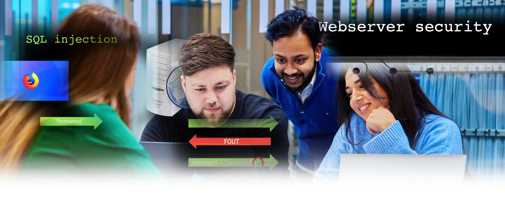

 09:30 - 11:00
09:30 - 11:00
08 oktober 2024
HL15
 Jaar 1
Jaar 1
Webbeveiliging, LEDs aansturen (Arduino) en Gamification
Check Discord voor de presentaties en andere activiteiten
Dinsdagochtend werden er drie mini workshops gehouden voor jaar 1, waarbij Open-ICT studenten in de meest bezochte workshop webbeveiliging zelf konden experimenteren met onderwerpen zoals SQL-injecties, beveiliging met SSL/TLS, en het belang van correcte inputvalidatie en foutmeldingen.
Bij de workshop "LED's aansturen" leerde je hoe je met een Arduino Nano LED's, een potentiometer en een servo aanstuurt door middel van knoppen en code-logica voor interactieve schakelingen.